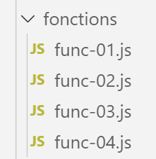

8. Les fonctions

8.1. script [func-01]
Le script s’intéresse au mode de passage des paramètres d’une fonction :
- passage par valeur pour nombres, chaînes et booléens ;
- passage par référence pour les tableaux, objets littéraux et fonctions ;
Exécution
8.2. script [func-02]
Le script suivant montre que le type [function] est un type de donnée comme un autre et qu’une variable peut avoir ce type. Il montre également deux façons de définir une fonction :
- l’une avec le mot clé [function] ;
- l’autre avec la notation « flèche » => ;
Exécution
8.3. script [func-03]
Ce script revient sur la possibilté de passer une fonction en paramètre à une autre fonction. Ce procédé est abondamment utilisé dans les frameworks Javascript.
Exécution
8.4. script [func-04]
Le script suivant montre qu’une fonction Javascript peut se comporter comme une classe :
Commentaires
- lignes 5-7 : le corps de la fonction f ne définit aucune propriété ;
- lignes 9-12 : on donne de l’extérieur des propriétés à la fonction f ;
- ligne 14 : utilisation de la function (objet) f. Notez qu’on n’écrit pas [f()] mais simplement [f]. On a là la notation d’un objet ;
- lignes 17-22 : on définit une fonction [g] comme si c’était une classe avec propriétés et méthodes ;
- ligne 24 : la fonction [g] est instanciée par [new g()] ; Résultats de l’exécution
ES6 a introduit la notion de classe qui nous permet désormais d’éviter de passer par des fonctions pour avoir des classes.
8.5. script [func-05]
Le script [func-05] montre l’usage d’un opérateur appelé [rest operator] :
- ligne 3 : la notation [...otherArgs] fait qu’avec un appel de type f(param1, param2, param3) on aura ligne 3 :
- arg1=param1
- otherArgs=[param2, param3]. [otherArgs] est donc un tableau qui rassemble tous les paramètres effectifs passés derrière [param1] ; Les résultats de l’application sont les suivants :